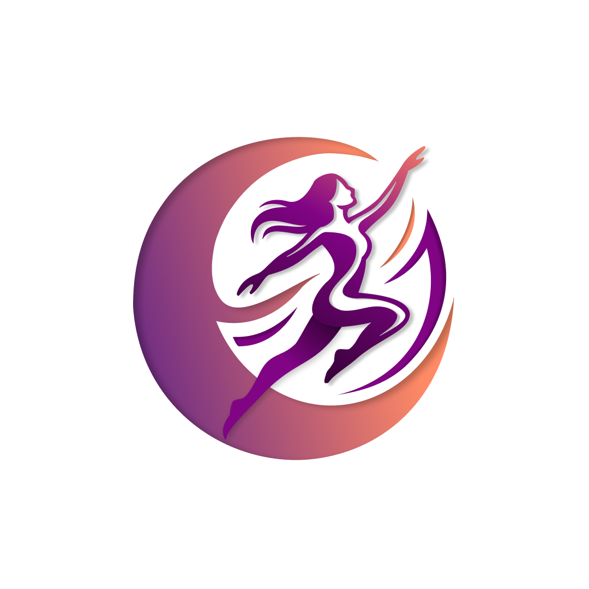
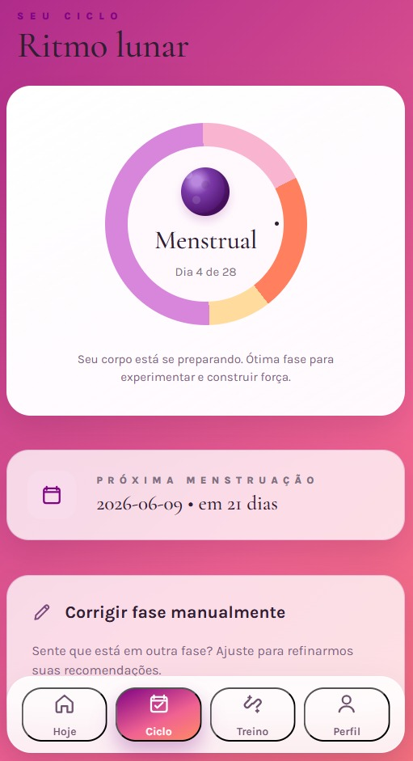
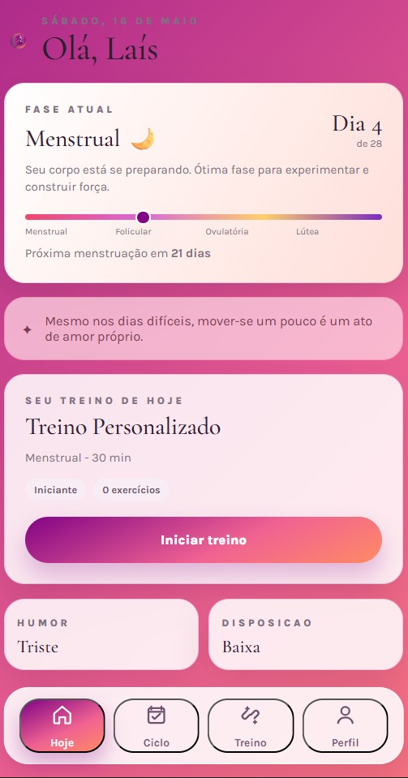
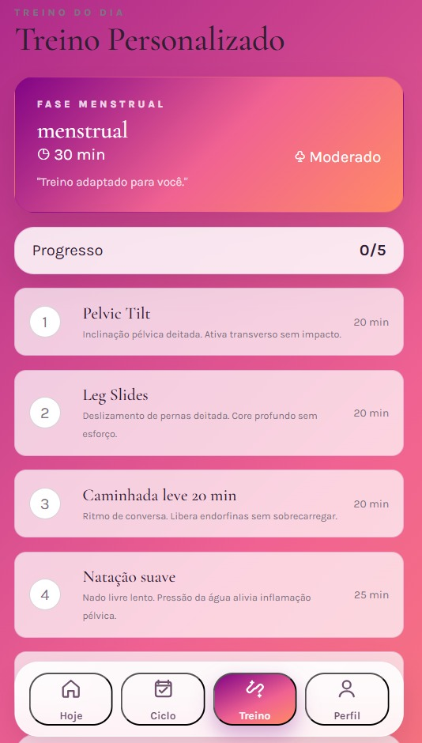

Movimento que respeita seu ritmo. Treinos personalizados para mulheres, em harmonia com seu ciclo e suas emoções.

O sistema realiza recomendações de exercícios físicos, ou seja, treinos personalizados, especificamente para mulheres. Apesar de ser um sistema amplamente consolidado no mercado, o sistema considera o ciclo menstrual da mulher para realizar as recomendações, pois, atualmente, o mercado é focado apenas nas condições físicas do corpo e não atuam em conjunto com as condições hormonais.
Dados do usuário: Entrada de informação para verificação da fase do ciclo menstrual: a usuária informa a data do último ciclo, então o site identifica a fase do ciclo. Registra restrições físicas, se houver e identifica o nível de experiência da usuária.
Controle do ciclo menstrual: O sistema com base nas informações da usuária consegue mapear as próximas fases do ciclo e a data da próxima menstruação.


Motor de recomendação de treino: Quando a usuária loga no sistema, é acolhida pelo sistema inteligente, com perguntas de avaliação de estado: a) como você está se sentindo hoje? e b) Qual a sua disposição? Com base nessas informações e algumas outras, o sistema gera o treino diário.
